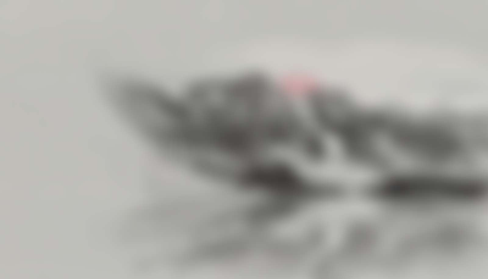

Focus Areas
Six areas where Canadian AI needs dedicated research, policy, and community engagement. Each reflects a core priority for building AI that truly serves Canada.
Sovereign AI
Advancing Canada's position in the global AI landscape. Ensuring technological sovereignty and data independence.
Learn more →Linguistic Tuning
Optimizing language models for Canadian English and Québécois French, along with regional and cultural contexts.
Learn more →Accessibility
Ensuring AI technologies are accessible to all Canadians, from first-time users to elderly communities.
Learn more →Indigenous Communities
Supporting Indigenous languages, knowledge systems, and communities with respect and cultural sensitivity.
Learn more →Society & Culture
Studying the broader societal impacts of AI on Canadian culture, institutions, and democratic processes.
Learn more →Applied Research
Actionable findings that support real products and policy decisions for Canadian organizations.
Learn more →